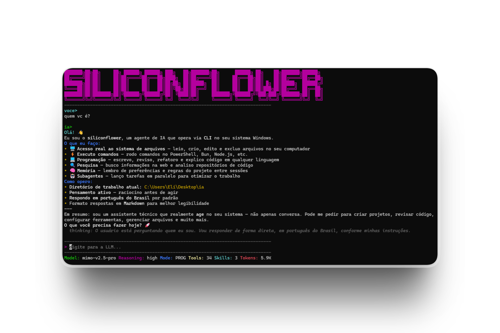
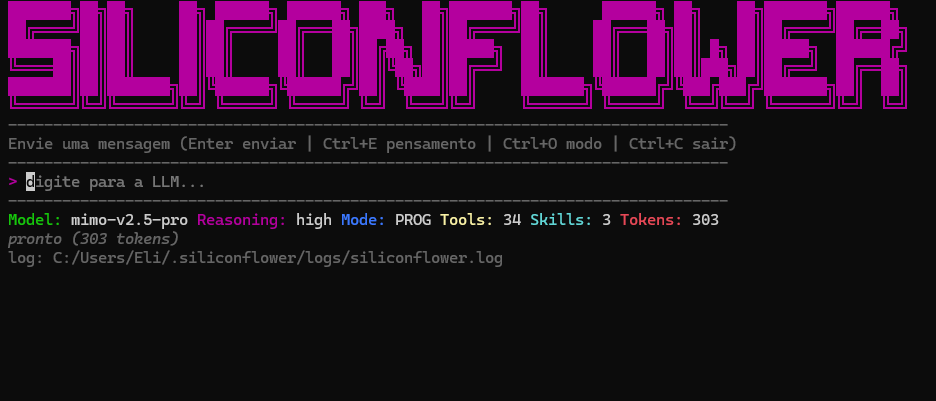

Entende antes de editar
RepoMap, busca de símbolos e leitura seletiva constroem contexto estrutural sem despejar o projeto inteiro no modelo.
O SiliconFlower reúne modelos, contexto, ferramentas e subagentes em um harness local para executar trabalho real de engenharia — com cada ação visível e sob seu controle.
Windows 10/11 · Bun 1.3+ ou Node.js 20+ · licença MIT

captura realO estado inicial mostra modelo, reasoning, modo, ferramentas, skills e consumo de tokens antes mesmo da primeira instrução.

Não é apenas uma janela de chat. O harness entende o repositório, escolhe ferramentas, coordena trabalho paralelo e mantém o estado da execução.
RepoMap, busca de símbolos e leitura seletiva constroem contexto estrutural sem despejar o projeto inteiro no modelo.
Subagentes assumem pesquisa, planejamento, implementação e verificação enquanto a sessão principal continua responsiva.
Git worktrees permitem testar refatorações e tarefas arriscadas em branches temporárias sem tocar na área de trabalho atual.
Chamadas de ferramenta, agentes ativos, branch, consumo de contexto e modo de operação permanecem visíveis durante todo o trabalho.
Recursos integrados para reduzir troca de contexto e permitir que o agente vá além de gerar trechos de código.
Delegue papéis de research, plan, coder, verification ou custom. A sessão principal acompanha resultados e continua trabalhando sem bloquear a interface.
Preferências, regras e contexto ficam isolados por workspace em ~/.siliconflower/, fora do repositório e disponíveis em sessões futuras.
Mapeamento estrutural para TypeScript, JavaScript, Python, Go, Rust, C e C++ com uso econômico de contexto.
Crie ambientes temporários, valide mudanças e encerre a tarefa sem alterar sua branch de trabalho.
Conecte servidores MCP externos e amplie o conjunto de ferramentas sem acoplar integrações ao núcleo.
Dispare rotinas em eventos como preTool, postTool, onEdit, onCommand e início ou fim de sessão.
Pesquise e consulte documentação durante a execução para trabalhar com informação atual e verificável.
Produza entregáveis em Markdown, HTML, JSON e Mermaid fora do fluxo efêmero da conversa.
A arquitetura separa provedor, orquestração e execução. Você pode trocar o modelo sem reaprender o produto ou refazer seu workflow.
instrução · arquivos · contexto
OpenAI · Anthropic · OpenRouter · SiliconFlow
planning · routing · memory · modes
34 tools · MCP · agents · hooks
Você escolhe quanto o agente pode pensar, onde pode atuar e como deve se comportar. Os controles ficam disponíveis durante a sessão, não escondidos em uma configuração distante.
Ajuste a profundidade de raciocínio conforme a complexidade da tarefa e o suporte do provedor.
Alterne entre programação, sistema e plano para adaptar o conjunto de ações permitidas ao tipo de trabalho.
Worktrees e branches temporárias mantêm mudanças experimentais separadas até você decidir integrá-las.
Ferramentas, tarefas, saídas truncadas e eventos de sessão ficam organizados em ~/.siliconflower/.
Use APIs diretas ou catálogos multi-modelo. A configuração centraliza endpoint, credencial, modelo e nível de raciocínio.
Clone o projeto, instale as dependências e inicie. Na primeira execução, o assistente configura provedor, modelo e credencial.
# clone e instale git clone https://github.com/siliconfps/siliconflower.git cd siliconflower bun install # abre o wizard na primeira execução bun run start
# gera dist/siliconflower.exe bun run build # adiciona ao PATH do usuário npm run install:bin # execute de qualquer pasta siliconflower
Explore o código, consulte a documentação e adapte o SiliconFlower ao seu fluxo. O projeto é gratuito, open source e publicado sob licença MIT.